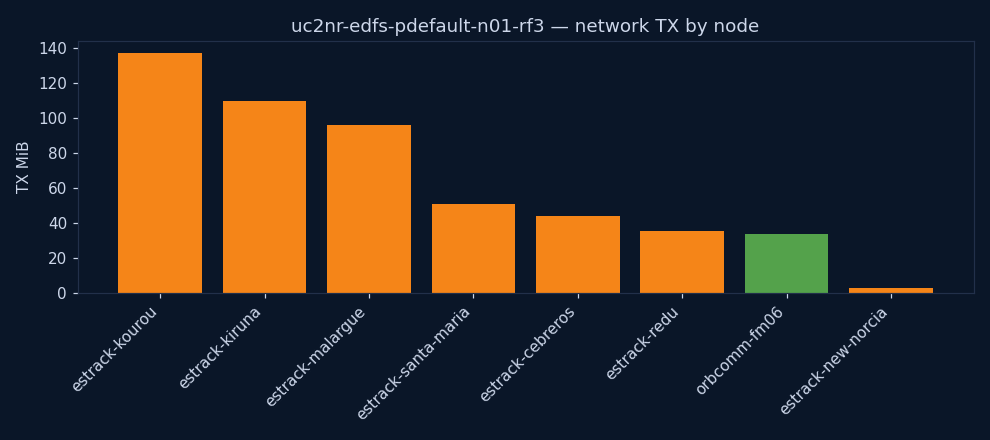
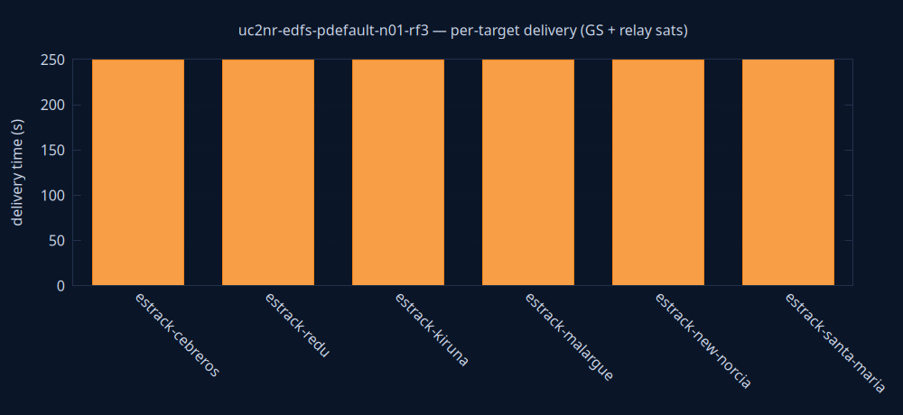

uc2nr-edfs-pdefault-n01-rf3
edfs
Success
| parameter | value | unit | description |
|---|---|---|---|
| engine | edfs | — | Storage/transport engine under test (edfs or tus) |
| priority | default | — | File priority class (low/default/high; EDFS PAR) |
| sat_count | 1 | sats | Number of satellites in the constellation |
| RF | 3 | copies | EDFS replication factor (n/a for TUS) |
| KPI | value | unit | description |
|---|---|---|---|
| state | Success | — | Terminal experiment state (Success/TimedOut/Failure) |
| exec_date | 2026-06-10 19:46 UTC | UTC | Wall-clock date/time the experiment was launched (CR creationTimestamp) |
| duration | 4m 15s | — | Experiment duration on the simulation clock (simulationStartTime → experimentTime) |
| sim_start | 2026-05-16 23:59 UTC | UTC | Simulation clock at experiment start (simulationStartTime) |
| sim_end | 2026-05-17 00:03 UTC | UTC | Simulation clock when the experiment finished (experimentTime) |
| produced | 1 | files | Files produced by the producer agent(s) |
| files_to_GS | 1 | count | Distinct produced files that reached at least one ground station |
| delivery_success_rate | 100 | % | Distinct files reaching ≥1 GS as a percentage of files produced (UC2/UC5 primary KPI) |
| all_delivered | yes | — | Whether every produced file reached a ground station |
| first_GS_delivery_s | 249 | s | Time from sim start until the first produced file reached any ground station |
| last_GS_delivery_s | 249 | s | Time from sim start until the last produced file reached a ground station (all-delivered time) |
| GS_reached | 6 | count | Ground stations that received the file (from received_total — independent of the delivery-time metric) |
| distinct_receivers | 6 | count | Distinct nodes that received a file (GS + relays) |
| TX_MiB | 509 | MiB | Total network bytes transmitted, all nodes |
| peak_cpu_m | 240 | millicores | Peak CPU across all containers |
| peak_mem_MiB | 142 | MiB | Peak memory across all containers |
| notes | — | — | Data-quality flags for this run (missing metrics, undelivered files) |
Node colours are consistent across every chart and the graph: ■ ground station · ■ relay satellite · ■ producer.
from → to per node = where it first acquired the file by the selected time. Grouped per file; 0-byte control messages omitted; times bucketed to ~2 s for cross-node clock skew. Timeline spans the whole experiment (0 = simulation start). Delivery completeness is the File deliveries table below. from → to = bytes transferred within the trailing window ending at the selected time (instantaneous flow). Edge colour = bandwidth (bits/s, blue = low → red = high); label shows the rate. Play to watch where traffic moves moment-to-moment. Timeline is the simulation clock (0 = simulation start), shared with the charts above.| file | received by | delivery (s from creation) | time from start | #fsNodes with file |
|---|---|---|---|---|
| orbcomm-fm06_0 | orbcomm-fm06 producer | t0 | 11s from start ← t0 | 1 |
| orbcomm-fm06_0 | estrack-cebreros GS | t0 + 249.5s | 4m 20s from start | 2 |
| orbcomm-fm06_0 | estrack-redu GS | t0 + 249.5s | 4m 20s from start | 3 |
| orbcomm-fm06_0 | estrack-kiruna GS | t0 + 249.6s | 4m 20s from start | 4 |
| orbcomm-fm06_0 | estrack-malargue GS | t0 + 249.6s | 4m 20s from start | 5 |
| orbcomm-fm06_0 | estrack-new-norcia GS | t0 + 249.7s | 4m 20s from start | 6 |
| orbcomm-fm06_0 | estrack-santa-maria GS | t0 + 249.9s | 4m 20s from start | 7 |

